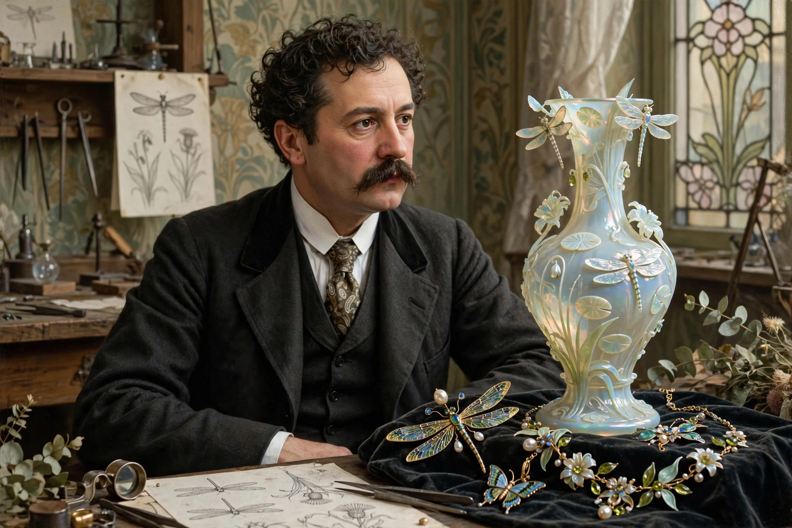

René Jules Lalique (6 April 1860 – 1 May 1945) was a French jeweller, medallist, and glass designer known for his creations of glass art, perfume bottles, vases, jewellery, chandeliers, clocks, and automobile hood ornaments. He was a defining figure of the Art Nouveau and Art Deco movements.

| René Lalique | |
|---|---|
| Born | 6 April 1860, Ay, Marne, France |
| Died | 1 May 1945 (aged 85), Paris, France |
| Occupation | Jeweller, glass designer |
| Known for | Art Nouveau jewellery; Art Deco glass |
Lalique was born in Ay in the Marne department. He apprenticed with the Parisian jeweller Louis Aucoc at sixteen and studied at the École des Arts Décoratifs. After a period in London, he returned to Paris and in 1885 opened his own workshop, soon designing for houses such as Cartier and Boucheron. His Art Nouveau jewellery was revolutionary: he prized artistic design over the intrinsic value of stones, using horn, enamel, ivory, and semi-precious stones, with motifs drawn from nature — dragonflies, orchids, peacocks, and the female form. Sarah Bernhardt was among his famous patrons.
From around 1907 Lalique designed perfume bottles for François Coty, and glass became his dominant medium. He established a glassworks at Combs-la-Ville and in 1921 a larger factory at Wingen-sur-Moder in Alsace, exploiting the region's glassmaking tradition. His moulded, often opalescent glass — vases, bowls, statuettes, and radiator-cap mascots for luxury cars — became emblematic of Art Deco style after the 1925 Paris Exposition Internationale des Arts Décoratifs. Lalique also produced glass panels and lighting for ocean liners such as the SS Normandie, and in 1935 created the glass fountain and interior for the Breves Gallery in London.
Lalique died in Paris in 1945. The company he founded continues as Lalique Group, producing crystal, jewellery, and perfume. The Musée Lalique at Wingen-sur-Moder, opened in 2011, displays a major collection of his work, and his villa at Wingen is preserved as a museum.
Article recreated from memory for the muse-webcrawl project.